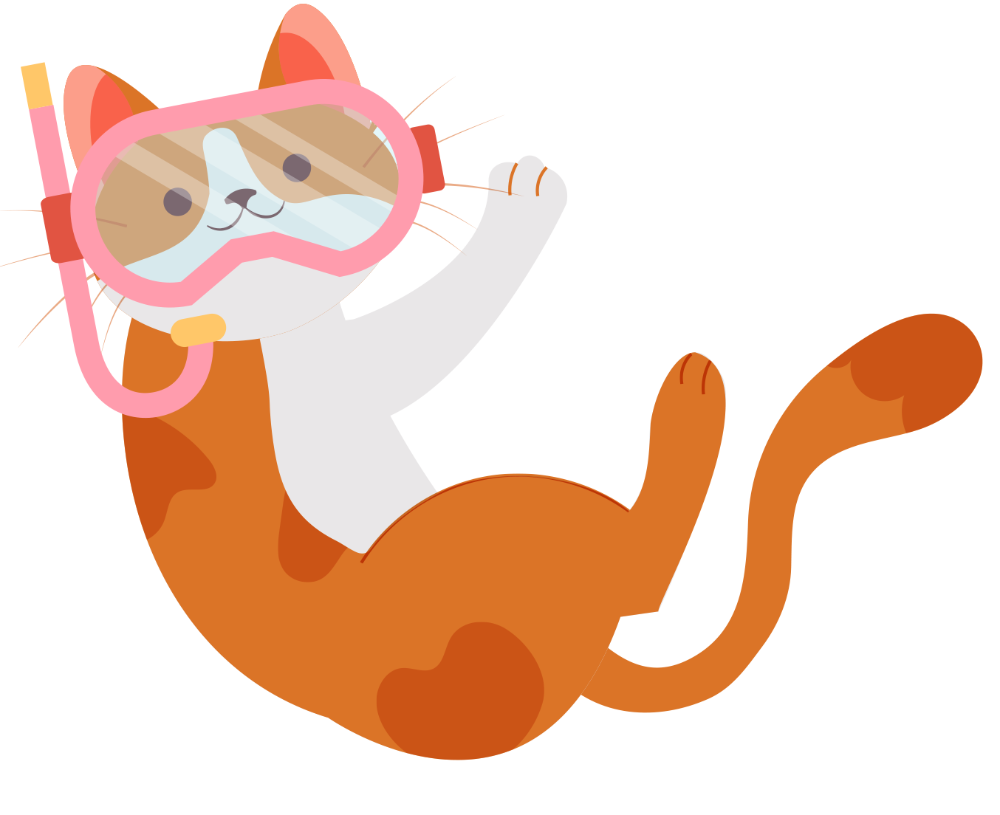

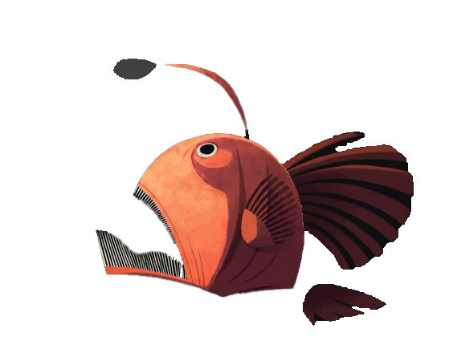
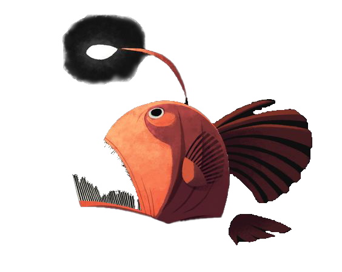
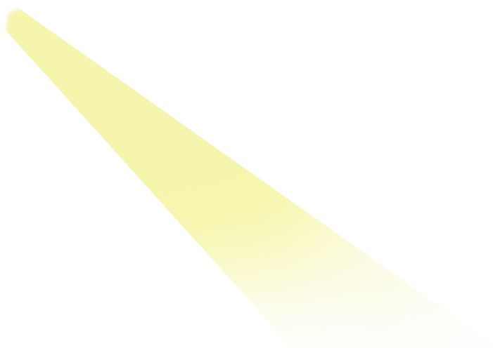
-
深度30m
黑身管鼻鯙（學名：Rainbow Eel）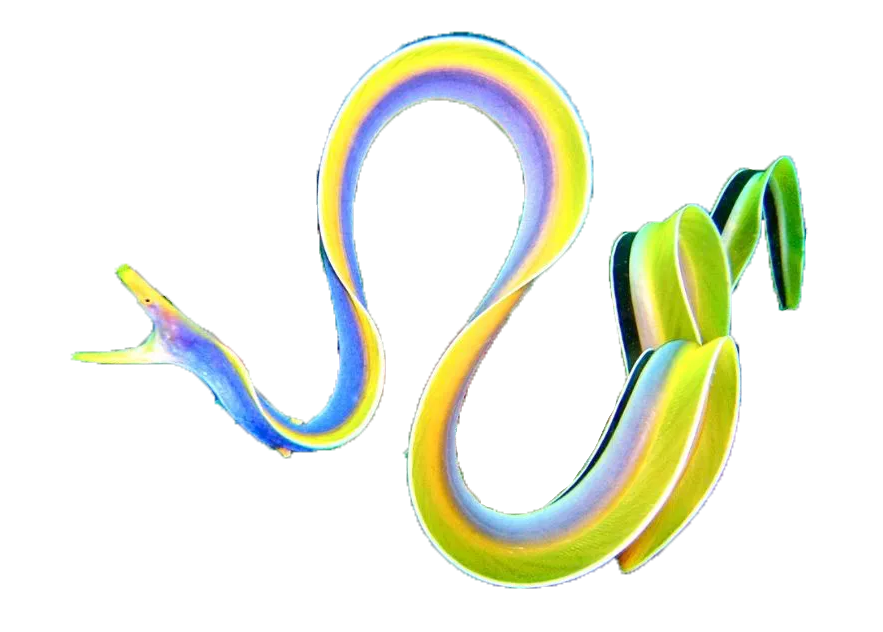體色為彩虹色，又稱五彩鰻，
外觀多彩，身上沒有鱗片。
分布在不同的熱帶和亞熱帶海洋區域，大多數生活在淺水域， 如珊瑚礁、潟湖、河口和沿岸區域 -
深度40m
大西洋海神海蛞蝓（學名：Glaucus atlanticus）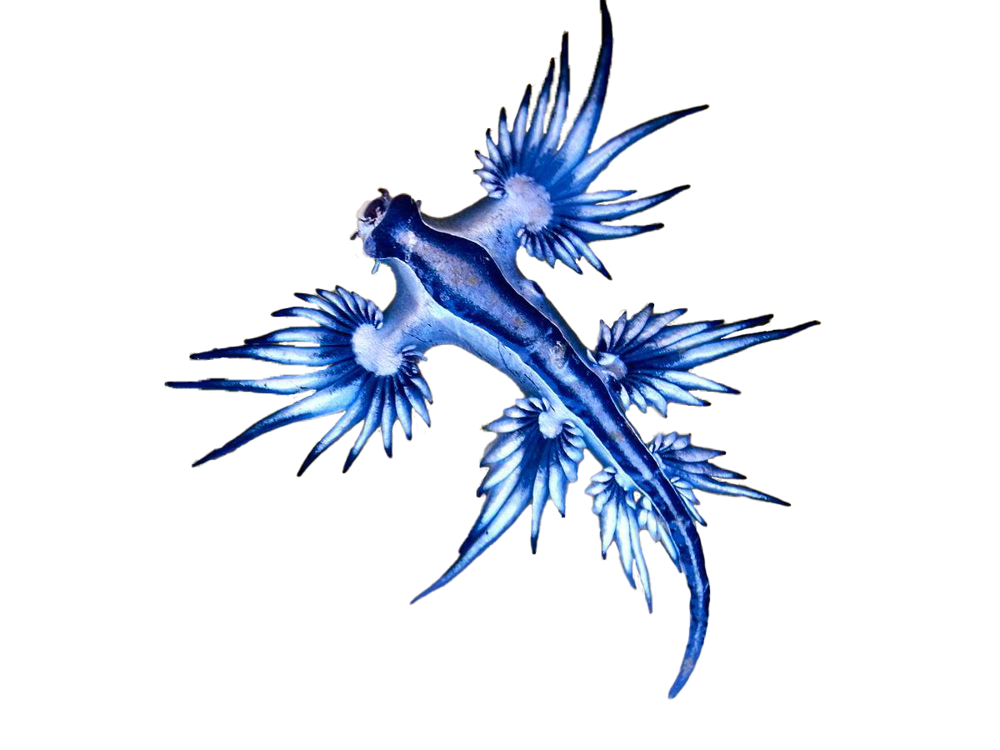是一種有毒的海洋生物，
觸到觸手後可能會引發疼痛、發癢、水腫和皮膚刺激。
其明亮藍色氣囊和長觸手特別顯眼。
牠們會隨著潮汐和海洋流動而漂浮，不會深入到水下的深處。 -
深度50m
翻車魚（學名：Mola mola）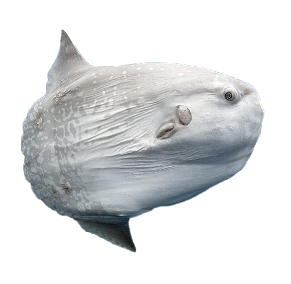翻車魚的尾鰭被一個圓形的鰭片所取代。身體扁平。
成年翻車魚平均長度為1.8公尺，背鰭到臀鰭長度為2.5公尺
翻車魚進食後，時常游到海面處，側躺晒太陽提升體溫，促進腸子的消化， 但橫躺的姿態很像翻肚掛掉，故名為「翻車魚」。 -
深度70m
藍環章魚（學名：Hapalochlaena maculosa）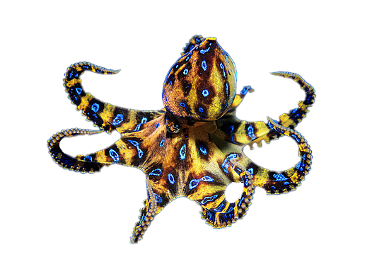藍環章魚可由口腺分出劇毒，目前沒有解毒劑
一隻藍圈章魚會以皮膚的色素細胞來將自己隱藏在環境之中
一旦被激怒，就會迅速將體色改變為亮黃色，並顯示出藍色的圈狀花紋。 -
深度100m
巨型海鞘（學名：Predatory tunicate）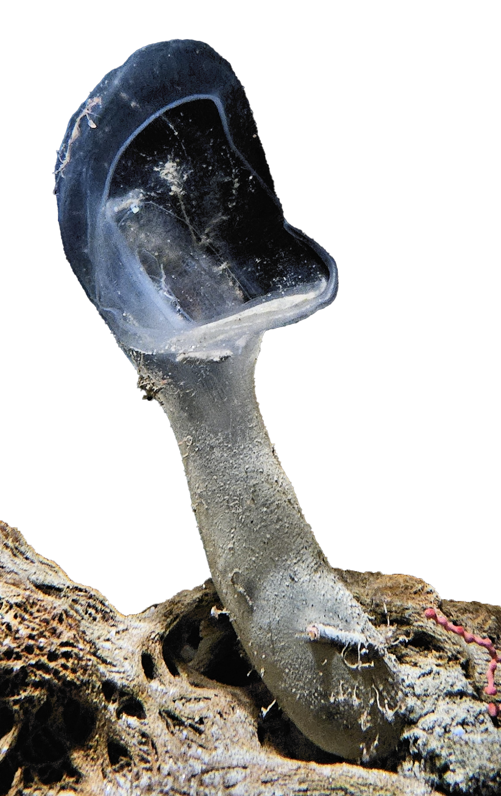這些生物外觀像固定的袋子，通常呈透明或半透明狀，
它們的鞘可以呈現不同的顏色，包括透明、粉紅、紅色或橙色。
他們擁有特殊的過濾營養方式，生活在海洋底部的沉積物上。 -
深度200m
雷諾水母（學名：Atolla reynoldsi）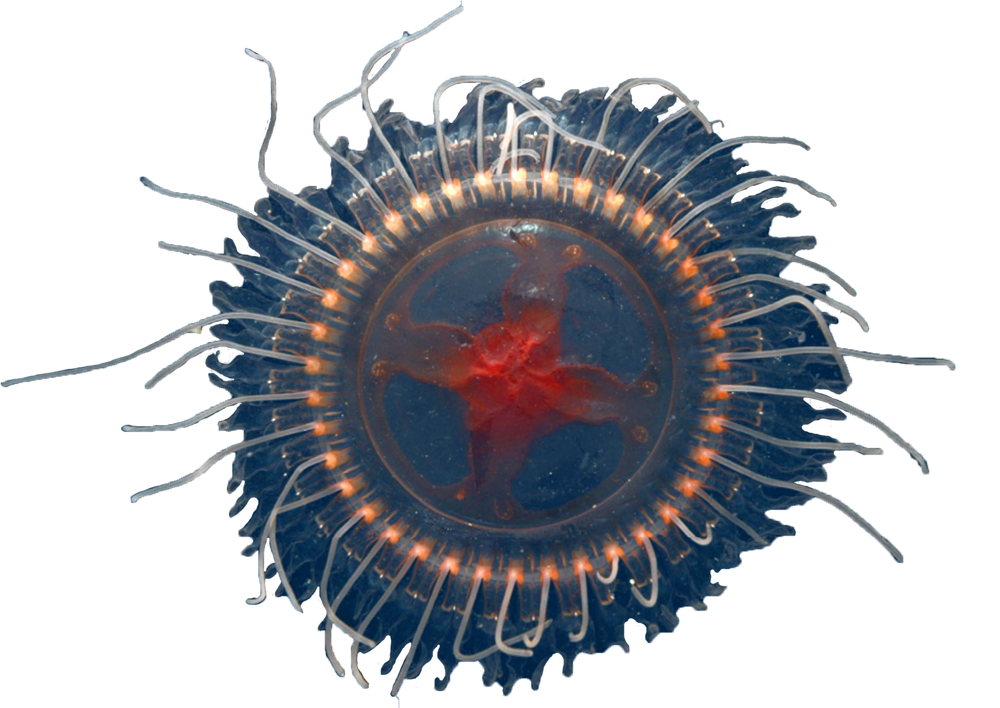這些水母以其特殊的發光能力而聞名，通常在黑暗的深海中漂浮。
它們的鞘可以呈現不同的顏色，包括透明、粉紅、紅色或橙色。
他們擁有特殊的過濾營養方式，生活在海洋底部的沉積物上。 -
深度650m
太平洋桶眼魚（學名：Macropinna microstoma）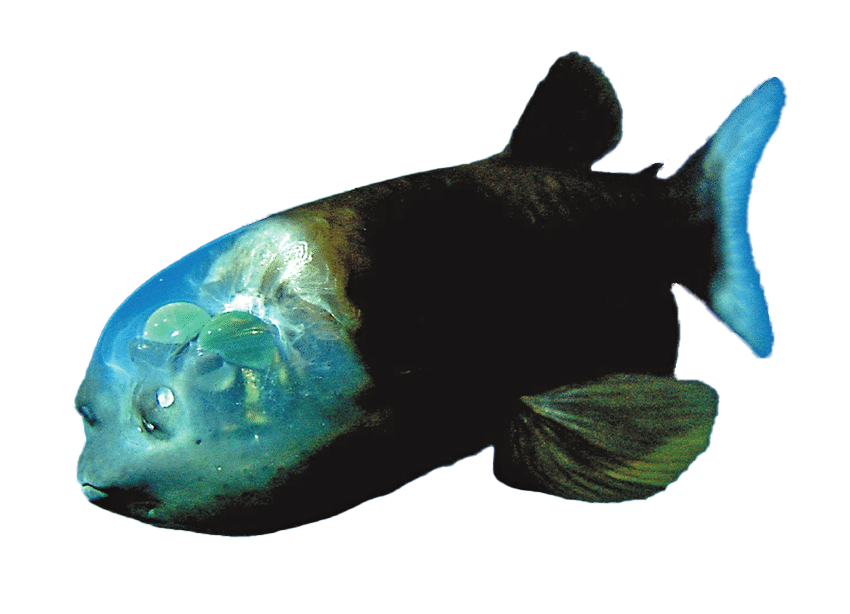頭部前端有個類似泡型座艙罩的外觀，裡面充滿了透明的液體，
向上偵測掠食者及獵物(小魚和水母)，管狀的眼睛就在這個透明的保護罩裡旋轉。 -
深度1000m
玻璃章魚（學名：Vitreledonella richardi）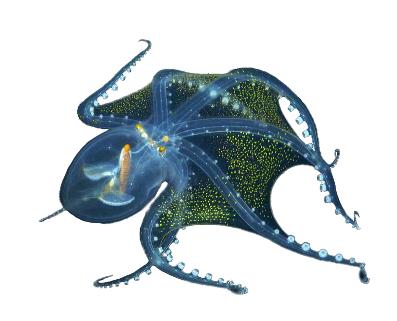是一種透明、膠狀、幾乎無色的中層至深海章魚，這使它們在深海中具有極佳的隱蔽性。
分佈於世界各地的熱帶和亞熱帶海洋中 -
深度1500m
深海龍魚（學名：Scaleless Dragonfish）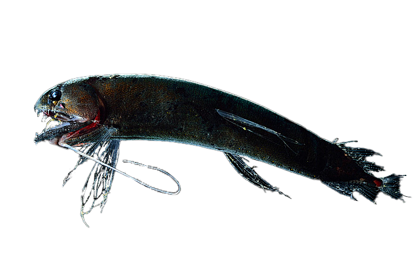深海龍魚是骨舌魚科魚類，又稱“黑巨口魚”。
深海龍魚是一種完全無鱗的魚，魚體形不大，身長為10-15釐米，
頭部較大，它們的嘴也很大嘴裏長有尖牙，嘴裏長着像釘子一樣尖利的上下兩排牙齒。 -
深度4000m
小飛象章魚（學名：Dumbo Octopus）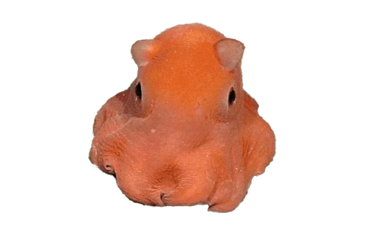觸腕間具有薄膜的章魚，當觸腕向外張開時看起來就像是一朵雨傘。
在體內具有U型或W型的小殼用來維持外套膜的外型並與觸腕肌肉相連結。
牠們的外皮十分脆弱，當受到傷害時會有明顯的白色斑點浮現。 -
深度8300m
蝸牛魚（學名：Snailfish）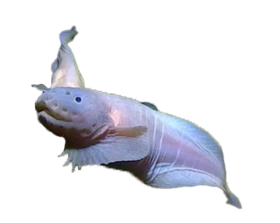魚體呈半透明狀。此魚被金氏世界紀錄認定為最深海魚。
這些演化特徵包括主要由軟骨構成的骨骼以及頭骨中的間隙， 以承受巨大的壓力，超過8,000公尺的壓力可能超過地表壓力的800倍以上。
深海區